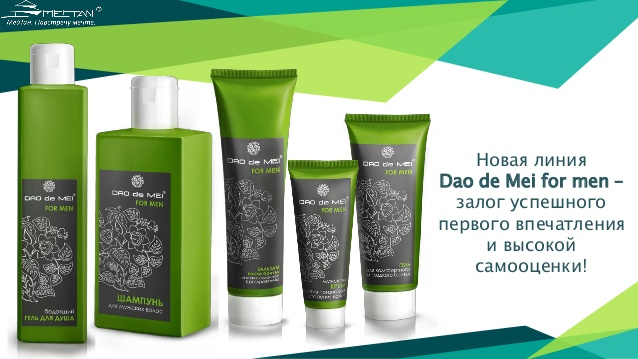
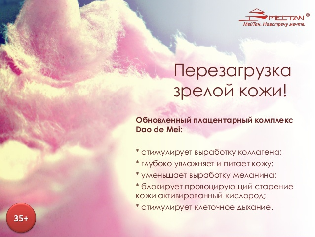
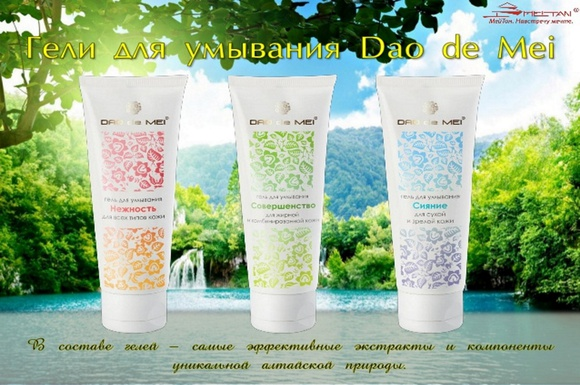
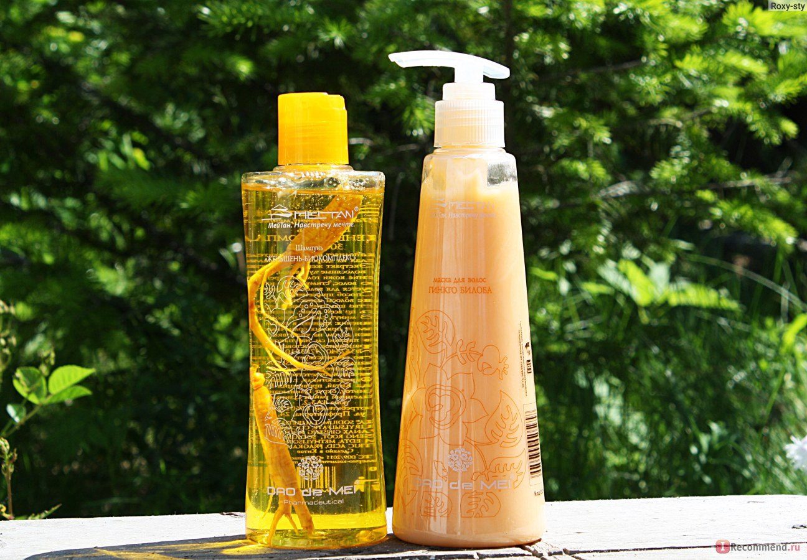
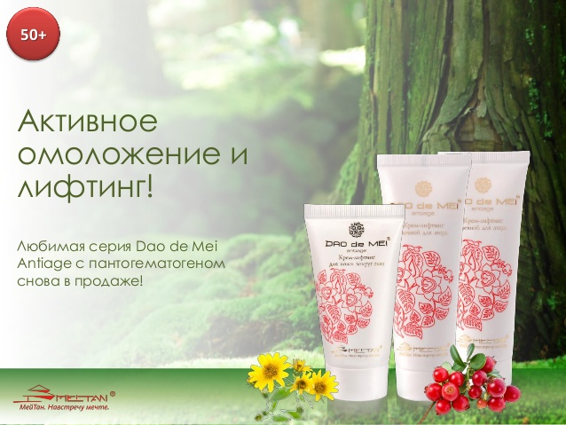
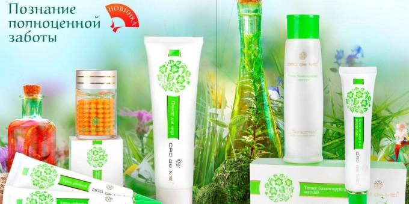
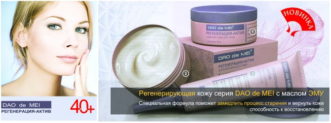

Мужская серия Dao de Mei
Серия "Дао де Мей"- флагманская серия среди многообразия продукции МейТан. Она обьединяет в себе средства по уходу за кожей лица, рук и волосами на основе более чем 25 растительных и животных ингредеентов.
Изготовленный на основе чистейшей воды с идеально сбалансированным содержанием витаминов и минералов, каждый продукт серии "Дао де Мей" наполнит Вашу кожу и волосы живительной силой, подарит обновление.
Плацентарный комплекс
Каждая женщина понимает, что с возрастом ее внешность меняется. Но это не означает, что нежелательным изменениям нельзя противостоять. Чтобы помочь женщинам как можно дольше сохранять красоту и молодость, Компания МейТан создала косметику с экстрактом плаценты, пользоваться которой рекомендуется уже после 35 лет. Экстракт плаценты содержит аминокислоты, белок, лецитин и множество витаминов. Все они необходимы, чтобы кожа оставалась упругой, имела здоровый оттенок, и выглядела молодо.
Выравнивающий плацентарный крем для дневного и ночного ухода
Крем помогает улучшить естественный цвет кожи, осветлить следы постакне и пигментации, глубоко увлажнить, и защитить ее от внешних стрессов.
Крем от морщин
Активный компонент плацентарного крема для лица проникает в глубокие слои кожи, способствует регенерации клеток, замедляет процессы старения, а также уменьшает количество и глубину морщинок. При регулярном применении кожа становится более упругой и гладкой.
Крем – тональная основа
С помощью этого плацентарного комплекса, выполняющего роль и крема, и тональной основы, можно не только замаскировать недостатки кожи, но и увлажнить ее, а также защитить от негативных факторов окружающей среды. Средство ровно ложится на кожу тонким слоем и смотрится совершенно естественно.
Увлажняющий питательный крем
Такой крем с экстрактом плаценты восполняет недостаток питательных веществ и повышает способность поглощать и сохранять влагу. В результате кожа становится шелковистой и мягкой, а также получает защиту от негативных факторов внешней среды.
Очищающие средства Dao de Mei
Очищающий гель используется как первый этап ежедневного ухода за кожей. Эта процедура помогает избавиться от частиц грязи, пыли и остатков косметики, чтобы они не забивали поры. Нежные средства для умывания МейТан из серии Dao de Mei («Дао де Мей») успокаивают раздражения, и укрепляют естественный защитный барьер. Утром они подготовят кожу к дневному макияжу, а вечером освободят ее для усвоения полезных кремов и сывороток. Подробные описания в каталоге помогут вам купить гель для умывания, который подойдет вашему возрасту и особенностям кожи, а их легкая цена станет приятным сюрпризом.
Сделайте выбор для своего типа кожи
Нормальная и комбинированная. Гель «Живая вода» на основе кремниевой воды активизирует процесс клеточного метаболизма, оказывает укрепляющее действие, освежает и успокаивает.
Проблемная и жирная. Гель «Естественная красота» с антибактериальными свойствами обеспечивает интенсивное очищение. Он создает защитный барьер и препятствует возникновению угрей.
Зрелая кожа. Гель «Океан красоты» нормализует pH, отлично увлажняет, питает и обеспечивает легкий матирующий эффект. Средство обладает омолаживающими свойствами.
Чувствительная. Регулярное использование геля «Зеленый чай» поможет устранить раздражения, улучшить цвет лица, а также восстановить защитный водно-липидный барьер.
Для всех типов. Гель «Нежность» с облепиховым соком приятно освежает кожу, дарит ей упругость, обладает осветляющими свойствами.
«Дао де Мей» – природное начало красоты вашей кожи!
Средства для волос Dao de Mei
Роскошные струящиеся волосы, сияющие на солнце, – это настоящий символ красоты и здоровья женщины. И специально для того, чтобы ваши локоны всегда оставались ухоженными и сильными, Компания МейТан разработала линию средств для ухода за волосами Dao de Mei.
Шампуни
Шампунь «Женьшень-биокомплекс» помогает восстановить и укрепить структуру волос. Пряди становятся блестящими и защищенными от вредного воздействия ветра и солнца. Также благодаря входящему в состав женьшеню средство предотвращает обезвоживание и выпадение волос. Укрепляющий шампунь с тибетским кордицепсом способствует улучшению кровообращения, сокращает выпадение волос и активизирует рост новых. Подходит для укрепления и восстановления сухих волос.
Бальзамы
Бальзамы от МейТан – незаменимое дополнение шампуней. Они не только облегчают расчесывание и защищают волосы от термического воздействия, но и решают ряд специальных проблем. Укрепляющий бальзам с тибетским кордицепсом способствует росту волос и делает их более упругими и плотными. Бальзам «Женьшень-биокомплекс» помогает вылечить секущиеся кончики, а средство на основе экстракта акульего хряща защищает от солнечных лучей.
Маски
Маска для волос с экстрактом гинкго билоба позволяет восстановить их структуру изнутри, предотвратить ломкость секущихся кончиков, интенсивно напитать волосы и вернуть им блеск и упругость. Купить такое средство для ухода за волосами стоит в том случае, если вы регулярно подвергаете локоны агрессивным внешним воздействиям – часто делаете термическую укладку, долго бываете на солнце, ходите в бассейн.
Моделирующая и подтягивающая кожу линия Dao de Mei Antiage
Чистая экология Алтая – настоящий кладезь целебных природных средств. У сырья, получаемого в этом крае, нет мировых аналогов. Именно поэтому серия антивозрастной лифтинг-косметики Dao de Mei Antiage была создана на основе растительных экстрактов из алтайских предгорий и пантогематогена – компонента, добываемого из молодых рогов маралов. Благодаря особой комбинации активных ингредиентов средства серии «Дао де Мей Анти Эйдж» оказывают поразительный эффект в борьбе с увяданием кожи.
Основные ингредиенты серии
Пантогематоген – активизирует регенерацию клеток, оказывает подтягивающий эффект, интенсивно питает кожу, освежает и восстанавливает ее упругость.
Масло сои – отличается высоким содержанием фитоэстрогенов и токоферола, которые замедляют процесс клеточного старения.
Экстракт брусники – осветляет кожу, предотвращает возникновение пигментных пятен, способствует разглаживанию морщин.
Арника – оказывает омолаживающий и антибактериальный эффект, отлично тонизирует и укрепляет кожу.
Подсолнечник – помогает стабилизировать водно-липидный баланс, способствует естественному увлажнению, защищает от негативных внешних факторов.
Черная смородина – улучшает цвет лица и возвращает коже ровный тон.
Продукты серии
Дневной крем-лифтинг для лица. Обладает легкой текстурой, впитывается сразу после нанесения. Дарит коже мягкость, увлажнение и здоровье. Защищает от негативных воздействий окружающей среды, замедляет процессы старения и улучшает цвет лица.
Ночной крем-лифтинг для лица. Обеспечивает коже оптимальное питание. Высокое содержание активных компонентов способствует восстановлению кожи за время сна.
Антивозрастной крем-лифтинг для век и кожи вокруг глаз. Борется с возрастными и мимическими морщинами, уменьшает следы усталости, мешки и темные круги под глазами.
Доступные цены на лифтинг-кремы «Анти Эйдж» позволят вам ежедневно дарить своей коже мягкость, красоту и здоровье. Купить молодость нельзя, но можно сохранить ее ежедневной заботой и правильным уходом.
Кремы для рук Dao de Mei
.jpg)
Кожа рук нуждается в особом уходе, ведь она постоянно подвергается воздействию вредных факторов – низких температур, ультрафиолетовых лучей, химических веществ. Компания МейТан предлагает большой выбор кремов для рук, среди которых можно найти именно то средство, которое будет отвечать потребностям вашей кожи.
Активные компоненты
В состав кремов для рук Dao de Mei («Дао де Мей») входят разные активные компоненты. Каждый из них имеет свои полезные свойства, и помогает добиться определенного эффекта.
Папайя. Мякоть этого фрукта богата натрием, калием, фосфором, железом, кальцием, витаминами B, D и E. Они смягчают и увлажняют кожу, а также способствуют регенерации ее клеток. После применения крема для рук с папайей кожа становится более упругой и нежной.
Экстракт орхидеи. Благодаря высокому содержанию меди, цинка, магния и других минералов крем для рук Dao de Mei с экстрактом орхидеи увлажняет сухую кожу, смягчает ее, разглаживает морщинки и снимает раздражение.
Экстракт шиповника. Этот компонент способствует образованию собственного коллагена, укрепляет защитный барьер кожи, а также оказывает витаминизирующее, тонизирующее и бактерицидное действие. Купить крем для рук Dao de Mei с экстрактом шиповника стоит для защиты от ветра, холода и других неприятных факторов окружающей среды.
Алоэ вера. В алоэ вера содержится до 200 биологически активных веществ. Крем с этим компонентом глубоко питает и увлажняет кожу, замедляет процессы старения, восстанавливает и защищает ткани.
Экстракт плаценты. Это уникальный природный кладезь полезных веществ. Крем с экстрактом плаценты увлажняет и питает кожу рук, борется с воспалениями, восстанавливает цвет ногтей и укрепляет их.
Фитокомплекс Dao de Mei
Фитокомплекс Dao de Mei предназначен для мягкого, бережного очищения кожи от ороговевших клеток. Пилинг осветляет и выравнивает тон лица, борется с первыми признаками старения. После применения средства ваша кожа надолго останется свежей, мягкой и увлажненной. Вы можете купить пилинг для лица Dao de Mei в стандартном или компактном формате (тестере-саше).
Активный компонент
Пилинг для лица содержит гиалуроновую кислоту, которая является естественным компонентом нашей кожи. Она поддерживает водный баланс в клетках, обеспечивая длительное увлажнение. Гиалуроновая кислота стабилизирует структуру кожи, создает на ее поверхности защитную пленку, препятствующую потере воды, при этом не нарушая естественный газообмен с окружающей средой. После применения фитокомплекса с этим активным компонентом кожа становится более гладкой, мягкой и нежной, насыщается кислородом.
Способ применения
Пилинг рекомендуется использовать один или два раза в неделю. Благодаря гелевой консистенции средство легко наносится на кожу. Предварительно увлажните лицо. Затем поглаживающими движениями нанесите пилинг и помассируйте кожу в течение одной минуты. После этого умойте лицо теплой водой.
Ознакомьтесь с подробным описанием и ценой на пилинг для лица в нашем каталоге. Затем выберите подходящий формат упаковки и оформите заказ на сайте.
Подарите своей коже ощущение свежести, чистоты и увлажненности вместе с фитокомплексом МейТан!
Серия Dao de Mei с маслом Эму
В любом возрасте коже лица важно сохранять природную способность к регенерации. Однако после 40 лет естественное восстановление сводится к минимуму, а разрушение клеток при этом продолжается прежними темпами. Как следствие, кожа быстро увядает, на ней становятся все более заметными возрастные изменения. Регенерирующая косметика с маслом эму помогает замедлить процесс старения. Средства этой серии призваны вернуть коже природную способность к самовосстановлению.
Как действует косметика с маслом эму
- Стимулирует синтез коллагена и одновременно защищает его от разрушения.
- Восстанавливает гидролипидный барьер кожи.
- Восполняет запас необходимых липидов за счет содержания ненасыщенных жирных кислот.
Продукты серии
Дневной крем для лица «РЕГЕНЕРАЦИЯ-АКТИВ». Средство с трипептидом-1 предотвращает фотостарение кожи, уплотняет ее, способствует уменьшению мимических морщин, выравнивает тон лица. Благодаря наличию масла эму и растительных экстрактов в составе крем обладает усиленным комплексным действием.
Ночной крем для лица «РЕГЕНЕРАЦИЯ-АКТИВ». Средство интенсивно питает кожу, препятствует выработке меланина и за счет этого уменьшает пигментацию. Ночной крем с омега-6 и омега-9 кислотами способствует активному обновлению клеток и разглаживанию морщин.
Крем для кожи вокруг глаз «РЕГЕНЕРАЦИЯ-АКТИВ». Средство улучшает структуру кожи в этой деликатной зоне, уменьшает сеточку морщин. Крем с маслом эму помогает избавиться от темных кругов под глазами.
Ночная маска «РЕГЕНЕРАЦИЯ-АКТИВ». Средство подстраивается под естественные ритмы кожи во время сна, запускает процессы выработки коллагена и обновления клеток. Маска возвращает коже здоровый сияющий вид, разглаживает морщины, повышает местный иммунитет к воздействию вредных факторов.